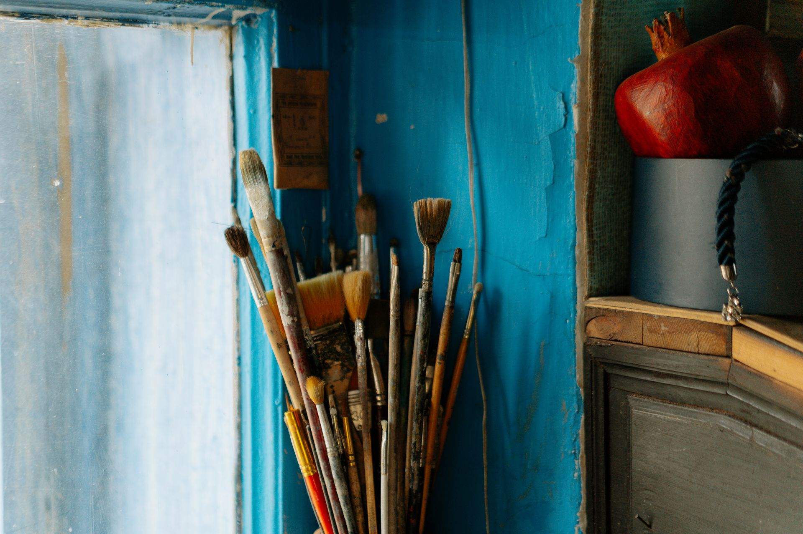
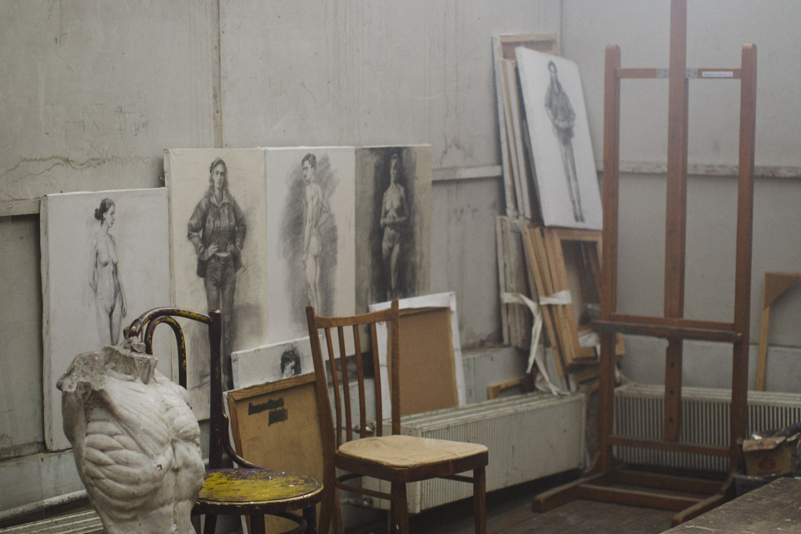

El Arte Auténtico Nace de Manos Independientes

Aquí, en AtelierStudio creemos y pensamoa que el arte trasciende la mera decoración: es un diálogo directo entre la sensibilidad del creador y la mirada de quien lo contempla. Nuestra plataforma nace con el propósito de tender un puente auténtico entre creadores emergentes y coleccionistas, apasionados o exploradores visuales que buscan piezas irrepetibles, cargadas de carácter y verdadero valor expresivo.
Cada obra que forma parte de nuestra galería —desde óleos elaborados con técnicas ancestrales y pigmentos orgánicos, hasta grabados modernos, acuarelas y piezas mixtas— encierra una historia viva. Detrás de cada textura y pincelada se encuentra el tiempo, la experimentación y el oficio honesto de artistas independientes que plasman y ponen en práctica su visión sin ataduras comerciales ni producciones masivas.
Al recorrer nuestra colección, no solo descubres propuestas visuales para transformar tus espacios con originalidad, sino que participas activamente en un ecosistema sostenible de autor. Adquirir una obra aquí significa respaldar de forma directa el talento emergente, valorar el proceso artesanal y consolidar una comunidad diversa que celebra, reflexiona y mantiene vivo el arte independiente.
Explora nuestras selecciones, conecta con los relatos de nuestros artistas y encuentra esa pieza única destinada a formar parte de tu historia, para siempre en tu casa.
